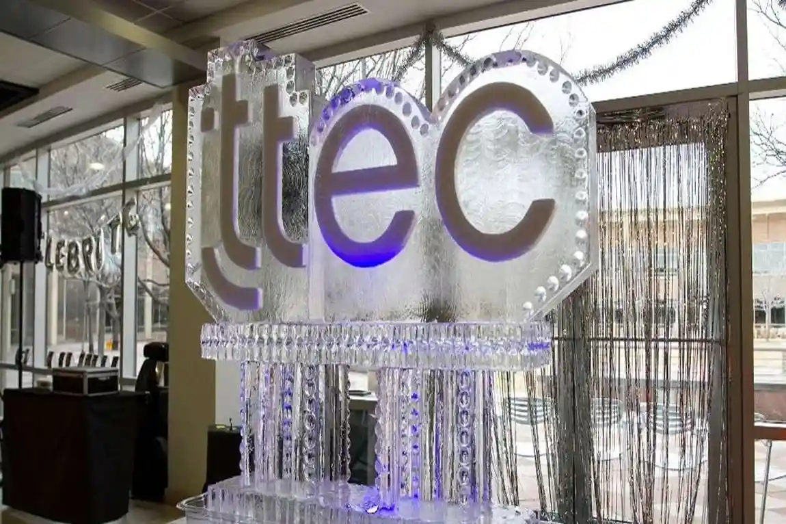
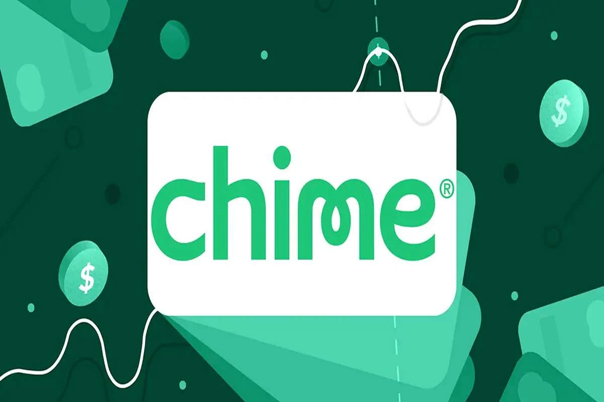

Federal investigators are examining trading activity linked to former Congressman George Santos on the prediction market platform Kalshi, according to multiple reports. The inquiry centers on a growing question inside Washington and the financial world: what happens when political insiders start betting on political outcomes?
The Department of Justice is reportedly investigating whether Santos used nonpublic information obtained through political connections to place profitable trades on political event contracts. No criminal charges have been announced. The investigation remains in its early stages.
Still, the implications are significant.
Prediction markets have exploded in popularity over the past few years. Platforms like Kalshi allow users to wager on elections, government actions and major news events. Supporters describe them as sophisticated forecasting tools. Critics see a system vulnerable to manipulation by people with privileged access.
Investigators are reportedly reviewing trades that accurately predicted political developments before those events became public. Authorities are examining transaction records, communications and the timing of the trades themselves.
The case could become one of the most important tests yet of how insider trading laws apply to prediction markets, a fast-growing industry operating in a legal gray area between finance, gambling and political speculation.
Investigators Focus on Trades That Raised Red Flags
According to reports cited by CBS News and other outlets, federal authorities became interested after reviewing trading activity that appeared unusually precise.
The contracts were related, it was reported, to political events and government actions that soared in value after being announced publicly. Investigators are now examining whether those trades were influenced by information unavailable to ordinary market participants at the time.
That distinction matters.
In traditional securities markets, insider trading laws are well established. Using material nonpublic information for financial gain can trigger serious criminal penalties. Prediction markets complicate that framework because traders are not buying ownership stakes in companies. They are speculating on what might happen in the future.
The legal boundaries are still unclear.
Supporters of prediction markets say they are simply better at aggregating public expectations than polls or expert analysis. Federal investigators don’t seem so much concerned about the idea itself, but rather with the possibility that politically connected people might have used nonpublic information for profit.
Reports suggest that officials are attempting to ascertain whether Santos possessed access to confidential political data from campaign networks, government contacts, or other associations that could have impacted his trading choices.
The investigation has quickly become a broader referendum on whether prediction markets can remain fair when some participants may hold information advantages unavailable to the public.
Kalshi and Political Betting Markets Face Growing Scrutiny
The Santos investigation arrives at a difficult moment for the prediction market industry.
Kalshi has quickly become one of the leading regulated prediction exchanges in the U.S. and has gained increasing interest from traders, investors and political observers. The platform offers contracts tied to elections, inflation, economic data and major political developments.
Trading volumes have surged. So has regulatory concern.
Critics have long warned that prediction markets create opportunities for politically connected traders to profit from privileged information. Those fears have only grown in the Santos case, and the calls for more oversight have grown louder.
Federal agencies are taking a closer look at these platforms, how they operate and whether existing safeguards are sufficient. Some legal analysts argue prediction exchanges should face oversight standards similar to traditional financial markets. Others counter that prediction contracts do not fit neatly into existing securities laws.
That uncertainty now sits at the center of the investigation.
Legal experts say any enforcement action involving Santos could establish important precedents regarding insider trading standards inside prediction markets. Regulators may eventually need to decide whether wagering on future political events should carry the same legal restrictions as trading stocks based on confidential information.
The broader concern extends beyond one platform.
As prediction markets grow, regulators are increasingly challenged to define unfair advantage in systems built around predicting real-world events.
Santos Faces Another Legal Storm After Political Collapse
For George Santos, the investigation adds another chapter to a political career already consumed by scandal.
The former New York congressman became one of the most controversial figures in recent congressional history after revelations that large portions of his personal and professional background had been fabricated. The controversies eventually led to his expulsion from Congress.
He has already faced extensive legal scrutiny tied to campaign finance and fraud allegations. The Kalshi inquiry introduces another possible legal threat as federal authorities continue reviewing his conduct.
Santos has not been charged in connection with the reported prediction market investigation. Prosecutors have also not publicly stated whether they believe any laws were broken. Legal experts stress that investigators must still determine whether sufficient evidence exists to support future action.
Even without charges, the case has drawn intense public attention because it combines two issues already under heavy scrutiny: political ethics and artificial financial markets built around insider information.
The investigation also points to the degree to which Santos is still caught up in debates about transparency, accountability and misconduct in public office.
For regulators, the case may ultimately matter less because of Santos himself and more because of what it could mean for the future of political prediction markets.
The central question remains unresolved. If someone knows what Washington is about to do before the public does, should they be allowed to profit from it? Federal investigators now appear determined to test where the legal limits actually are.
Sources:

ABOUT AUTHOR
Ethan R. Calloway is an investigative journalist who lives in Washington, D.C. He is known for doing a lot of research on topics like holding the government accountable, corporate wrongdoing, and changing the criminal justice system in the United States.

# FinTech
TTEC launches a customized AI-human integrated platform that enable high-growth fintechs handle fraud, onboarding, and customer experience on a large scale.

# FinTech
Chime had solid results in the fourth quarter and finished moving its proprietary software stack.


Leave a Reply